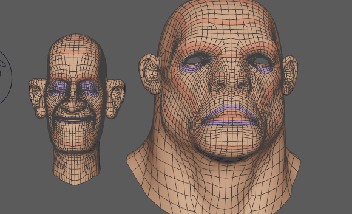

使用变形变形器，根据每个顶点处的坐标系增量，通过逐顶点缩放变形置换将动画从一个几何体传递到另一个几何体。在上例中，动画从左侧的较小头部传递到右侧的较大头部。
注： 目标几何体和源几何体必须具有相同的拓扑，即相同数量的顶点、边和面，才能顺利进行重定目标。
- 按住 Shift 键并选择要接收动画的对象，然后选择将提供动画的对象。

- 在“变形”(Deform)菜单中，选择 >
 。此时将显示变形选项(Morph options)窗口。（“变形”(Deform)菜单显示在“建模”(Modeling)(F2)、“绑定”(Rigging)(F3) 或“动画”(Animation)(F4) 菜单集中。）
注： 变形选项(Morph options)窗口包含用于在目标对象上创建源对象的变形的基本控件。源对象“属性编辑器”(Attribute Editor)的“变形”(Morph)选项卡中提供了变形变形器的详细内容。（变形选项(Morph options)主题中也介绍了这些设置。）
。此时将显示变形选项(Morph options)窗口。（“变形”(Deform)菜单显示在“建模”(Modeling)(F2)、“绑定”(Rigging)(F3) 或“动画”(Animation)(F4) 菜单集中。）
注： 变形选项(Morph options)窗口包含用于在目标对象上创建源对象的变形的基本控件。源对象“属性编辑器”(Attribute Editor)的“变形”(Morph)选项卡中提供了变形变形器的详细内容。（变形选项(Morph options)主题中也介绍了这些设置。） - 在“变形”(Morph)选项中，从“变形模式”(Morph Mode)下拉菜单中选择“重定目标”(Retarget)。
- 单击“应用”(Apply)。源对象将采用变形对象的变形。
- 在此示例中，由于接收动画的头部比原始头部大很多，因此网格中会出现撕裂。如果发生这种情况，请使用属性编辑器(Attribute Editor)的变形(Morph)选项卡中的“相邻指数”(Neighbor Exponent)设置来更正问题并平滑结果。